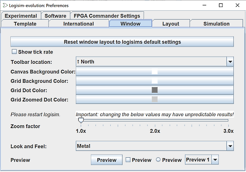

窗口选项卡

此选项卡包含影响 Logisim 主窗口外观的首选项。
-
将窗口布局重置为 Logisim 默认设置： 此按钮会将界面外观参数恢复为 Logisim-Evolution 的默认值。
-
显示节拍速率： 选中后，当节拍启用时，Logisim 会显示实际完成节拍的速率。节拍速率通过前 1,000 个节拍的平均值计算得出。（禁用节拍或更改最大节拍速率将清除其历史记录。）
实际节拍速率可能远低于所选节拍速率，因为 Logisim 无法以非常快的速度仿真较大的电路。例如，对于一个相当大的电路，Logisim 的最大速度可能是 16 Hz；您可以选择更快的节拍速率，但实际速度不会超过 16 Hz。
-
工具栏位置： 此下拉菜单用于配置工具栏在窗口中的位置。工具栏可以放在窗口的北、南、东、西四条边上，也可以隐藏；还可以放在“中间”，也就是画布左侧、资源管理器窗格和属性表右侧。
-
颜色选择按钮： 这组按钮用于更改 Logisim-evolution 界面的部分颜色。
画布背景颜色： 未显示网格时的工作区背景色
网格背景颜色： 显示网格时的工作区背景色
网格点颜色： 网格主点的显示颜色
网格缩放点颜色： 网格子单元点的显示颜色
-
缩放因子： 设置整个界面的缩放因子。此选项适用于高分辨率屏幕，但通常更建议使用操作系统提供的缩放功能。
需要重新启动程序。 -
外观风格： 用于根据个人喜好选择不同界面外观进行尝试。
需要重新启动程序。 -
预览： 这些按钮和框用于展示修改界面外观后的效果。
下一节： 布局选项卡。